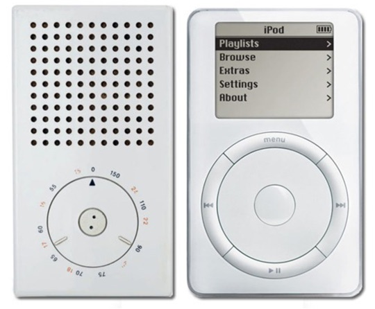

"Indifference towards people and the reality in which they live is actually the one and only cardinal sin in design." — Dieter Rams
Apple is known as one of the most design-conscious technology companies in the world. Early Apple succeeded in creating minimalist products that fit simply into people's lives. For example, the iPhone was originally designed to be used easily in one hand.
Steve Jobs himself became an iconic figure because he was minimalist to an extreme degree. He was known for wearing the same clothes everyday, keeping his homes mostly empty, and walking around barefoot.

Apple's obsession with simplicity was not unique in the world of design. Jony Ive has spoken openly about his appreciation of Dieter Rams. Rams defined what good design should look like in everyday objects while working for Braun:
"I wanted to make products whose appearance did not immediately command attention, but instead became more appealing through use and an enduring aesthetic."
Many of the early Apple products draw direct comparisons to Rams' creations. In a 2010 interview, Rams recalled receiving an iPhone from Ive personally, along with a thank you letter.

Even though the technological landscape has changed since Rams wrote his ten principles of good design in the 70s, the principles themselves have not. Apple is now one of the most economically powerful companies in human history, does it still follow Rams' philosophy of design?